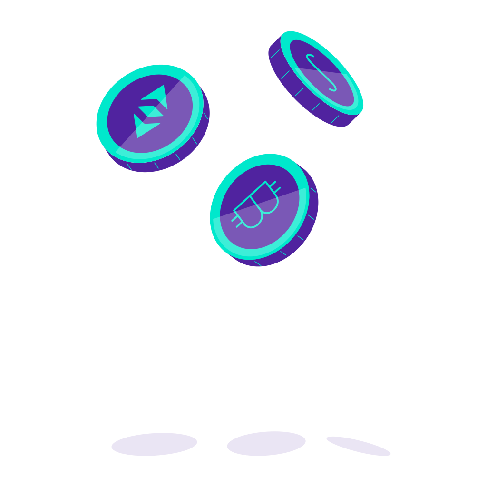

<ion-header no-border no-shadow>
  <ion-navbar color="whitePrimaryContrast">
    <ion-title><span [innerHTML]="'account-detail.title' | translate: { protocolName: wallet.coinProtocol.name }"></span></ion-title>

    <ion-buttons end>
      <button ion-button color="primary" (click)="openPreparePage()">Send {{ wallet.coinProtocol.symbol | uppercase }}</button>

      <button ion-button icon-only (click)="presentEditPopover($event)"><ion-icon name="more"></ion-icon></button>
    </ion-buttons>
  </ion-navbar>
</ion-header>

<ion-content>
  <ion-list no-lines no-margin>
    <portfolio-item [wallet]="wallet" [maxDigits]="8" tappable (click)="openTransactionPage(wallet)"></portfolio-item>
  </ion-list>

  <ion-row *ngIf="wallet.protocolIdentifier === 'xtz'">
    <card-actionable
      [imageLeft]="false"
      [imageName]="'currencies-empty.svg'"
      [text]="'account-detail.delegate_card.text' | translate: { amount: undelegatedAmount }"
      [heading]="'account-detail.delegate_card.heading' | translate"
      tappable
      (click)="goToDelegateSelection()"
    ></card-actionable>
  </ion-row>

  <div padding-horizontal class="empty-list" *ngIf="!hasSubAccounts">
    
    <p>
      {{ 'account-detail.no-accounts_text' | translate }}
    </p>
  </div>
  <ng-container *ngFor="let subProtocolType of subProtocolTypesArray">
    <ng-container *ngIf="supportedSubProtocolTypes.get(subProtocolType)">
      <ion-row class="transaction--label__container background--color__white" align-items-center>
        <ion-col col-10 padding>
          <span ion-text class="font--weight__bold" color="primary">
            <ng-container *ngIf="subProtocolType === subProtocolTypes.ACCOUNT">
              {{ 'account-detail.accounts_label' | translate }}
            </ng-container>
            <ng-container *ngIf="subProtocolType === subProtocolTypes.TOKEN">{{ 'account-detail.tokens_label' | translate }}</ng-container>
          </span>
        </ion-col>
      </ion-row>
      <ion-list no-lines no-margin>
        <portfolio-item
          [isToken]="true"
          *ngFor="let subWallet of subWalletGroups.get(subProtocolType)"
          [wallet]="subWallet"
          [maxDigits]="8"
          tappable
          (click)="openTransactionPage(subWallet)"
        ></portfolio-item>
      </ion-list>
    </ng-container>
  </ng-container>
  <ion-fab right bottom>
    <ng-container *ngFor="let subProtocolType of subProtocolTypesArray">
      <button
        *ngIf="supportedSubProtocolTypes.get(subProtocolType)"
        color="secondary"
        (click)="openAccountAddPage(subProtocolType, wallet)"
        ion-button
        round
        icon-left
      >
        <ion-icon md-name="add"></ion-icon>
        <ng-container *ngIf="subProtocolType === subProtocolTypes.ACCOUNT">
          {{ 'account-detail.add-accounts_label' | translate }}
        </ng-container>
        <ng-container *ngIf="subProtocolType === subProtocolTypes.TOKEN">{{ 'account-detail.add-tokens_label' | translate }}</ng-container>
      </button>
    </ng-container>
  </ion-fab>
</ion-content>
